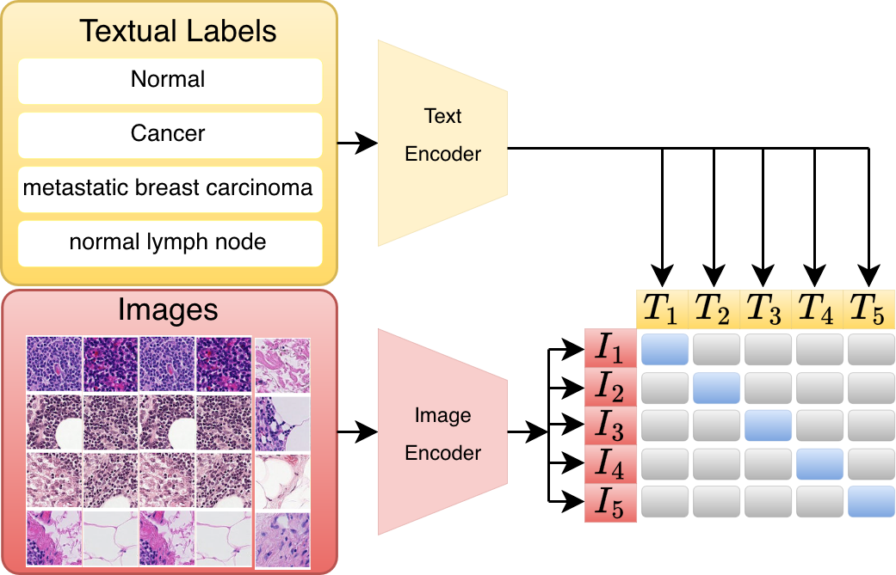
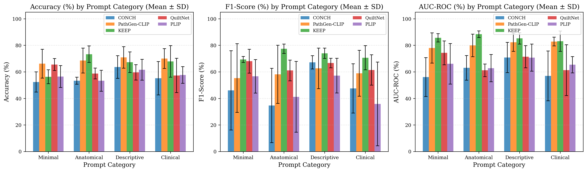
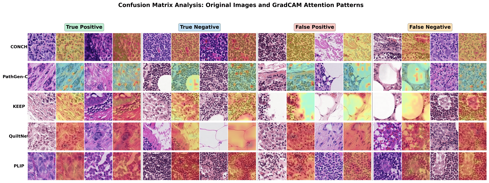

Vision-language models (VLMs) have emerged as powerful tools for computational pathology, enabling zero-shot classification through natural language prompts. Nevertheless, the implication of prompt design on model performance — especially the underlying attention mechanisms — lacks clarity. In this paper, we present a comprehensive study evaluating prompts in five state-of-the-art pathology VLMs: CONCH, PathGen-CLIP, KEEP, QuiltNet, and PLIP.
To systematically evaluate these models, we design 20 prompts organized into four categories — minimal, anatomical, descriptive, and clinical. Our quantitative analysis on the PCam dataset reveals that clinical prompts improve accuracy by up to 30% compared to minimal prompts, with KEEP achieving the highest performance of 83.3%. Furthermore, we uncover model-specific biases through GradCAM-based attention visualization across confusion matrix categories: false positives arise from attention to dense cellular regions, while false negatives result from focus on surrounding stroma rather than tumor regions. Our findings provide practical guidelines for prompt selection in clinical deployment and highlight the importance of attention analysis for model interpretability.
Controlled experiment with 20 prompts across 4 hierarchical categories on 5 SOTA pathology VLMs, quantifying performance variability within and across prompt types on the full PCam test split (32,768 images).
GradCAM visualization across all four confusion matrix categories (TP, TN, FP, FN), identifying systematic attention patterns that explain model-specific failure modes and their underlying causes.
Empirical evidence that clinical terminology improves accuracy by up to 30%, combined with failure-mode analysis that informs prompt selection and attention monitoring strategies for clinical use.
All five models share the same inference mechanism: a vision encoder maps the histopathology patch into a latent embedding, and a text encoder maps each class description into the same space. The class whose text embedding has the highest cosine similarity with the image embedding is predicted — no fine-tuning required.

Figure 1. Overview of the CLIP framework for vision–language modeling. Image and text encoders are trained jointly through contrastive learning to align embeddings in a shared latent space. Zero-shot classification is performed at test time by selecting the class with the highest cosine similarity.
We evaluate five pathology-domain VLMs, all built on the CLIP architecture with Vision Transformer backbones pretrained on large-scale histopathology image-text corpora.
| Model | Pretraining Data | Architecture | Parameters |
|---|---|---|---|
| CONCH | 1.17 M H&E image-text pairs | ViT-B/16 | 86 M |
| PathGen-CLIP | PathGen-1.6 M dataset | ViT-B/16 | 86 M |
| KEEP | 143 K knowledge-enhanced semantic groups | ViT-L/16 | 304 M |
| QuiltNet | Quilt-1 M (1 M image-text pairs) | ViT-B/32 | 88 M |
| PLIP | OpenPath (208 K pairs) | ViT-B/32 | 88 M |
We design 20 prompt pairs organized into four hierarchical categories of increasing
clinical specificity. Each pair is ordered [negative class, positive class]
to align with PCam labels (0 = normal, 1 = tumor). Five prompts per category capture
intra-category variance.
| Category | Style | Example Negative Class | Example Positive Class |
|---|---|---|---|
| Minimal | Single-word labels | "normal" | "cancer" |
| Anatomical | + Anatomical context | "normal lymph node" | "lymph node with cancer" |
| Descriptive | + Imaging modality & staining | "histopathology image of normal tissue" | "histopathology image showing metastatic cancer" |
| Clinical | Diagnostic / pathology-report terminology | "sentinel lymph node without tumor involvement" | "sentinel lymph node with metastatic breast carcinoma" |
We evaluate on PatchCamelyon (PCam), a benchmark for metastatic tumor detection in lymph node histopathology. PCam contains 327,680 H&E stained images (96 × 96 px) with binary labels. We use the official test split of 32,768 images for all evaluations to ensure reproducibility.
KEEP achieves the highest best accuracy of 83.3%, followed by PathGen-CLIP (79.7%) and QuiltNet (74.5%). Critically, performance varies dramatically within each model — CONCH ranges from 38.4% to 73.3% across 20 prompts, a 34.9 percentage-point swing from prompt wording alone.
| Model | Best Accuracy | Best Prompt | Best F1 | Best AUC-ROC | Mean Acc. ± SD | Range (pp) |
|---|---|---|---|---|---|---|
| KEEP | 83.3% | clinical_3 | 83.8% | 92.0% | 66.2 ± 9.6% | 32.3 |
| PathGen-CLIP | 79.7% | anatomical_1 | 81.0% | 89.4% | 68.9 ± 8.3% | 26.7 |
| QuiltNet | 74.5% | clinical_2 | 74.3% | 85.0% | 60.3 ± 7.6% | 31.2 |
| CONCH | 73.3% | clinical_1 | 72.6% | 83.2% | 56.1 ± 8.9% | 34.9 |
| PLIP | 70.7% | descriptive_1 | 76.1% | 85.7% | 57.2 ± 7.4% | 28.1 |
All metrics on the PCam test split (32,768 images). Range = best − worst accuracy across all 20 prompts. Best row highlighted in green.
Clinical and descriptive prompts consistently outperform minimal prompts across most models, with accuracy improvements of 3.2% (PLIP) to 11.2% (CONCH). Model-category preferences diverge: KEEP performs best with anatomical prompts (73.3% mean), while CONCH, PathGen-CLIP, and PLIP favor descriptive prompts. High intra-category standard deviations (e.g., CONCH clinical: 11.2%) show that even within a category, exact wording still matters.

Figure 2. Mean ± SD accuracy (left), F1-score (middle), and AUC-ROC (right) for each model across the four prompt categories on PCam. Clinical and descriptive prompts consistently outperform minimal prompts. Error bars indicate standard deviation across the 5 prompts within each category.
| Cat. | Prompt pair (negative → positive) | CONCH | PathGen-CLIP | KEEP | QuiltNet | PLIP |
|---|---|---|---|---|---|---|
| Minimal | ||||||
| M1 | "normal" → "cancer" | 54.1 | 77.6 | 53.2 | 71.9 | 63.4 |
| M2 | "healthy" → "tumor" | 48.0 | 64.8 | 57.0 | 66.4 | 62.5 |
| M3 | "benign" → "malignant" | 45.0 | 58.8 | 65.2 | 64.2 | 52.0 |
| M4 | "no metastasis" → "metastasis" | 64.7 | 53.0 | 52.9 | 59.3 | 44.2 |
| M5 | "normal tissue" → "cancerous tissue" | 50.1 | 76.7 | 53.2 | 65.5 | 60.2 |
| Anatomical | ||||||
| A1 | "normal lymph node" → "lymph node with cancer" | 51.9 | 79.7 | 79.0 | 61.2 | 56.3 |
| A2 | "LN without metastasis" → "LN metastasis" | 54.2 | 55.1 | 71.2 | 54.6 | 42.6 |
| A3 | "healthy lymph node" → "metastatic lymph node" | 55.7 | 63.9 | 63.3 | 54.1 | 50.0 |
| A4 | "LN normal tissue" → "tumor in lymph node" | 49.3 | 73.3 | 76.5 | 61.7 | 53.3 |
| A5 | "benign LN tissue" → "cancerous LN tissue" | 55.4 | 70.4 | 76.3 | 62.3 | 64.2 |
| Descriptive | ||||||
| D1 | "histopathology image of normal tissue" → "... metastatic cancer" | 53.6 | 78.4 | 59.9 | 57.7 | 70.7 |
| D2 | "normal LN architecture" → "metastatic breast cancer" | 69.8 | 79.5 | 70.5 | 58.5 | 65.1 |
| D3 | "H&E stained normal LN" → "H&E stained LN with tumor" | 69.6 | 69.6 | 77.7 | 55.1 | 49.6 |
| D4 | "microscopy image of healthy LN" → "cancer metastasis" | 70.1 | 66.8 | 69.2 | 69.7 | 59.2 |
| D5 | "pathology slide with normal cells" → "malignant cells" | 54.9 | 60.1 | 59.1 | 57.0 | 63.1 |
| Clinical | ||||||
| C1 | "sentinel LN without tumor" → "... metastatic breast carcinoma" | 73.3 | 73.8 | 68.2 | 53.5 | 57.2 |
| C2 | "LN with preserved architecture" → "infiltrating carcinoma" | 55.6 | 78.8 | 51.1 | 74.5 | 65.0 |
| C3 | "LN with normal histology" → "metastatic adenocarcinoma in LN" | 57.5 | 58.9 | 83.3 | 48.7 | 50.0 |
| C4 | "LN free of metastatic disease" → "breast cancer metastasis to LN" | 51.2 | 67.2 | 63.9 | 43.2 | 53.4 |
| C5 | "histologically normal lymphoid tissue" → "tumor metastasis" | 38.4 | 71.3 | 73.0 | 66.6 | 62.8 |
All values are accuracy (%) on the PCam test split (32,768 images). Bold-green = best result per model. LN = lymph node.
Using each model's best-performing prompt, we generate GradCAM heatmaps for representative examples from all four confusion-matrix categories. This reveals not just whether models fail, but where they look and why.

Figure 3. GradCAM attention visualization across confusion matrix categories. Each row shows one model (using its best-performing prompt). Columns show True Positive (TP), True Negative (TN), False Positive (FP), and False Negative (FN) cases, each displaying the original H&E patch alongside its GradCAM overlay.
All models correctly attend to tumor regions. PathGen-CLIP and KEEP show highly focused attention on metastatic cells, correlating with their higher overall accuracy. CONCH exhibits more diffuse attention even in correct predictions.
Models identify normal tissue by distributing attention across preserved lymph node architecture. KEEP and PathGen-CLIP show broad, appropriate coverage of normal cellular structures; QuiltNet focuses on specific local regions.
FP errors arise from attention to dense cellular regions, reactive lymphoid hyperplasia, and tissue artifacts that superficially mimic metastatic tissue. PLIP and CONCH are most susceptible, over-relying on low-level texture features rather than structural diagnostic patterns.
85% of FN cases show peak attention on surrounding stroma or inflammatory infiltrates rather than tumor cells. Most pronounced in CONCH and PLIP, this pattern suggests models discount the primary diagnostic feature when reactive context is prominent.
If you use this work, please cite:
Please also cite the underlying models and dataset:
| Asset | Citation |
|---|---|
| PCam dataset | Veeling et al., Rotation Equivariant CNNs for Digital Pathology, MICCAI 2018 |
| CONCH | Lu et al., A visual–language foundation model for computational pathology, Nature Medicine 2024 |
| PathGen-CLIP | Sun et al., PathGen-1.6M, 2024 |
| KEEP | Zhou et al., KEEP: Knowledge-enhanced foundation model for histopathology, 2024 |
| QuiltNet | Ikezogwo et al., Quilt-1M: One million image-text pairs for histopathology, NeurIPS 2023 |
| PLIP | Huang et al., PLIP: A visual–language foundation model for pathology image analysis, Nature Medicine 2023 |
This work builds on the models and datasets released by the teams behind PCam, CONCH, PathGen-CLIP, KEEP, QuiltNet, and PLIP. We thank the open-source community and the authors of PyTorch, OpenCLIP, timm, and HuggingFace Transformers.